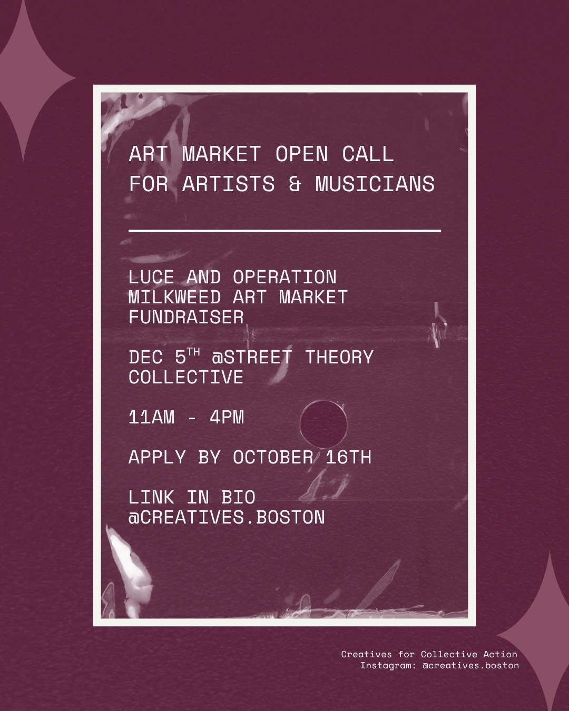

Fundraising Market
Our first Fundraising Market will bring local artists and community members together in the heart of Central Square to raise money for families supported by LUCE and Operation Milkweed.
Join us at Street Theory Collective in Central Square to shop from 15 art vendors, enjoy live music, and visit a cash bar. Artists of all mediums will sell their work at the event. We will post the full list of artists closer to December 5.
541 Massachusetts Ave
Cambridge, MA 02139
Apply to be a vendor
Bring your work to the market.
We invite artists of all mediums to sell at our event. There is no table fee, and tables and chairs will be provided. We ask that a minimum of 40% of proceeds be donated to families supported by LUCE and Operation Milkweed at the end of the event. More is welcome.
Please complete the vendor form by October 16, 2026 to be considered.
Apply as a vendor